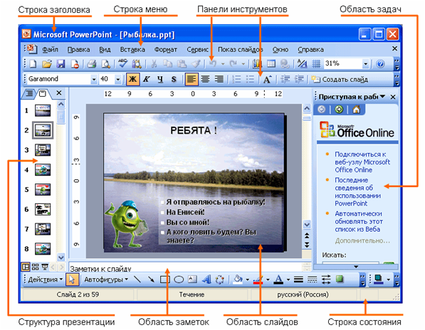

1. Понятие мультимедийной презентации
1. Понятие мультимедийной презентации
Мультимедиа — интерактивная система, обеспечивающая одновременное представление различных медиа — звук, анимированная компьютерная графика, видеоряд.
Презентация — общественное представление чего-либо нового, недавно появившегося, созданного.
Мультимедийная презентация — набор слайдов и спецэффектов (слайд-шоу), текстовое содержимое презентации, заметки докладчика, а также раздаточный материал для аудитории, хранящиеся в одном файле.
Достоинства презентации:
- Последовательность изложения – при смене слайдов легко удерживать внимание аудитории.
- Возможность воспользоваться официальной подсказкой - как расставить акценты и о чем не забыть.
- Мультимедийные эффекты
- Копируемость
- Транспортабельность- флешка с презентацией компактнее плакатов
2.Интерфейс программы PowerPoint

Режимы просмотра: Для эффективного применения PowerPoint при создании и редактировании презентаций необходимо использовать различные режимы просмотра документов. Режимы представляют собой разные способы отображения слайдов на экране.
Режимы отображения слайдов:
- Режим «Слайдов»-выбирается по умолчанию, именно в нем происходит работа с отдельными слайдами.
- Режим «Структуры»- отображаются заголовки и текста слайдов в виде иерархической структуры, напоминающий оглавление книги
- Режим «Сортировщик слайдов» – это режим, в котором все слайды презентации отображаются виде миниатюр.
- Режим «Страницы заметок» – режим просмотра, в котором к каждому из слайдов можно добавить заметки докладчика.
- Режим «Демонстрации» - используется для просмотра работы и предварительного выполнения готовой презентации
3.Правила оформления компьютерных презентаций
Общие правила дизайна
Многие дизайнеры утверждают, что законов и правил в дизайне нет. Есть советы, рекомендации, приемы. Дизайн, как всякий вид творчества, искусства, как всякий способ одних людей общаться с другими, как язык, как мысль — обойдет любые правила и законы.
Однако, можно привести определенные рекомендации, которые следует соблюдать, во всяком случае, начинающим дизайнерам, до тех пор, пока они не почувствуют в себе силу и уверенность сочинять собственные правила и рекомендации.
Правила шрифтового оформления:
- Шрифты с засечками читаются легче, чем гротески (шрифты без засечек);
- Для основного текста не рекомендуется использовать прописные буквы.
- Шрифтовой контраст можно создать посредством: размера шрифта, толщины шрифта, начертания, формы, направления и цвета.
Правила выбора цветовой гаммы.
- Цветовая гамма должна состоять не более чем из двух-трех цветов.
- Существуют не сочетаемые комбинации цветов.
- Черный цвет имеет негативный (мрачный) подтекст.
- Белый текст на черном фоне читается плохо (инверсия плохо читается).
Правила общей композиции.
- На полосе не должно быть больше семи значимых объектов, так как человек не в состоянии запомнить за один раз более семи пунктов чего-либо.
- Логотип на полосе должен располагаться справа внизу (слева наверху и т. д.).
- Логотип должен быть простой и лаконичной формы.
- Дизайн должен быть простым, а текст — коротким.
- Изображения домашних животных, детей, женщин и т.д. являются положительными образами.
- Крупные объекты в составе любой композиции смотрятся довольно неважно. Аршинные буквы в заголовках, кнопки навигации высотой в 40 пикселей, верстка в одну колонку шириной в 600 точек, разделитель одного цвета, растянутый на весь экран — все это придает дизайну непрофессиональный вид.
Не стоит забывать, что на каждое подобное утверждение есть сотни примеров, доказывающих обратное. Поэтому приведенные утверждения нельзя назвать общими и универсальными правилами дизайна, они верны лишь в определенных случаях.
Рекомендации по дизайну презентации
Чтобы презентация хорошо воспринималась слушателями и не вызывала отрицательных эмоций (подсознательных или вполне осознанных), необходимо соблюдать правила ее оформления.
Презентация предполагает сочетание информации различных типов: текста, графических изображений, музыкальных и звуковых эффектов, анимации и видеофрагментов. Поэтому необходимо учитывать специфику комбинирования фрагментов информации различных типов. Кроме того, оформление и демонстрация каждого из перечисленных типов информации также подчиняется определенным правилам. Так, например, для текстовой информации важен выбор шрифта, для графической — яркость и насыщенность цвета, для наилучшего их совместного восприятия необходимо оптимальное взаиморасположение на слайде.
Рассмотрим рекомендации по оформлению и представлению на экране материалов различного вида.
Текстовая информация
- размер шрифта: 24–54 пункта (заголовок), 18–36 пунктов (обычный текст);
- цвет шрифта и цвет фона должны контрастировать (текст должен хорошо читаться), но не резать глаза;
- тип шрифта: для основного текста гладкий шрифт без засечек (Arial, Tahoma, Verdana), для заголовка можно использовать декоративный шрифт, если он хорошо читаем;
- курсив, подчеркивание, жирный шрифт, прописные буквы рекомендуется использовать только для смыслового выделения фрагмента текста.
Графическая информация
- рисунки, фотографии, диаграммы призваны дополнить текстовую информацию или передать ее в более наглядном виде;
- желательно избегать в презентации рисунков, не несущих смысловой нагрузки, если они не являются частью стилевого оформления;
- цвет графических изображений не должен резко контрастировать с общим стилевым оформлением слайда;
- иллюстрации рекомендуется сопровождать пояснительным текстом;
- если графическое изображение используется в качестве фона, то текст на этом фоне должен быть хорошо читаем.
Анимация
Анимационные эффекты используются для привлечения внимания слушателей или для демонстрации динамики развития какого-либо процесса. В этих случаях использование анимации оправдано, но не стоит чрезмерно насыщать презентацию такими эффектами, иначе это вызовет негативную реакцию аудитории.
Звук
- звуковое сопровождение должно отражать суть или подчеркивать особенность темы слайда, презентации;
- необходимо выбрать оптимальную громкость, чтобы звук был слышен всем слушателям, но не был оглушительным;
- если это фоновая музыка, то она должна не отвлекать внимание слушателей и не заглушать слова докладчика. Чтобы все материалы слайда воспринимались целостно, и не возникало диссонанса между отдельными его фрагментами, необходимо учитывать общие правила оформления презентации.
Единое стилевое оформление
- стиль может включать: определенный шрифт (гарнитура и цвет), цвет фона или фоновый рисунок, декоративный элемент небольшого размера и др.;
- не рекомендуется использовать в стилевом оформлении презентации более 3 цветов и более 3 типов шрифта;
- оформление слайда не должно отвлекать внимание слушателей от его содержательной части;
- все слайды презентации должны быть выдержаны в одном стиле;
Содержание и расположение информационных блоков на слайде
- информационных блоков не должно быть слишком много (3-6);
- рекомендуемый размер одного информационного блока — не более 1/2 размера слайда;
- желательно присутствие на странице блоков с разнотипной информацией (текст, графики, диаграммы, таблицы, рисунки), дополняющей друг друга;
- ключевые слова в информационном блоке необходимо выделить;
- информационные блоки лучше располагать горизонтально, связанные по смыслу блоки — слева направо;
- наиболее важную информацию следует поместить в центр слайда;
- логика предъявления информации на слайдах и в презентации должна соответствовать логике ее изложения.
Помимо правильного расположения текстовых блоков, нужно не забывать и об их содержании — тексте. В нем ни в коем случае не должно содержаться орфографических ошибок. Также следует учитывать общие правила оформления текста.
После создания презентации и ее оформления, необходимо отрепетировать ее показ и свое выступление, проверить, как будет выглядеть презентация в целом (на экране компьютера или проекционном экране), насколько скоро и адекватно она воспринимается из разных мест аудитории, при разном освещении, шумовом сопровождении, в обстановке, максимально приближенной к реальным условиям выступления.